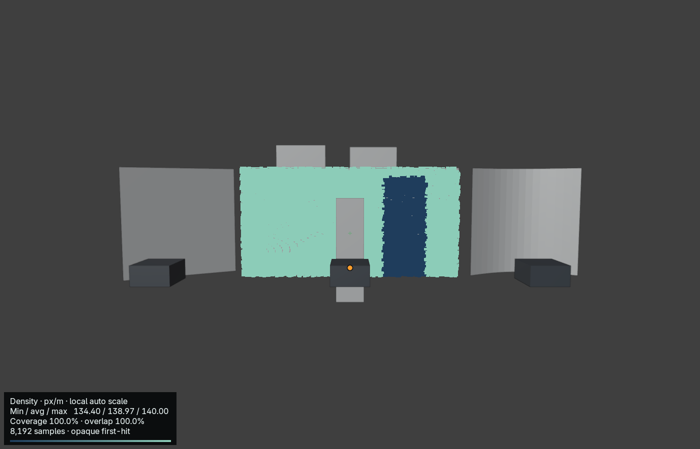
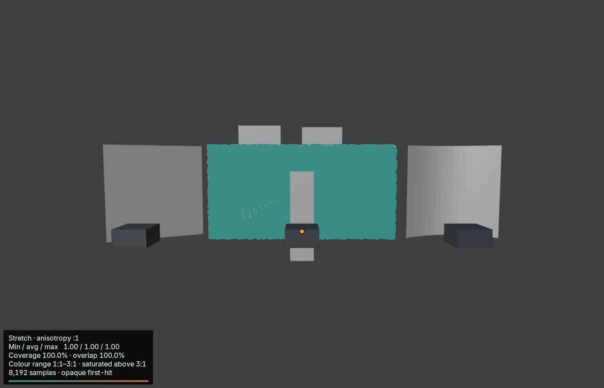
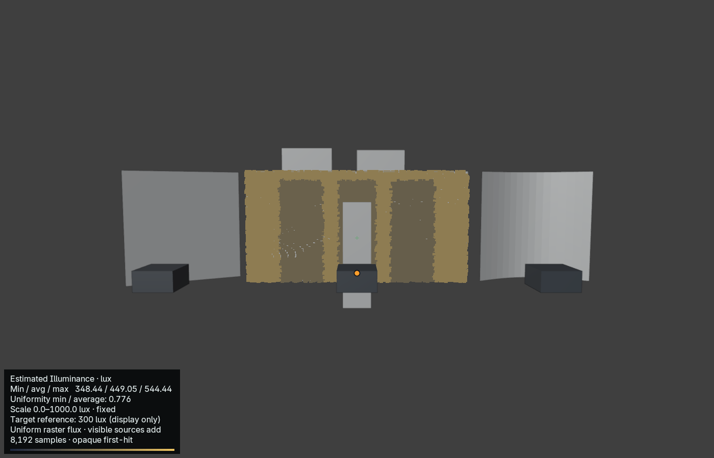
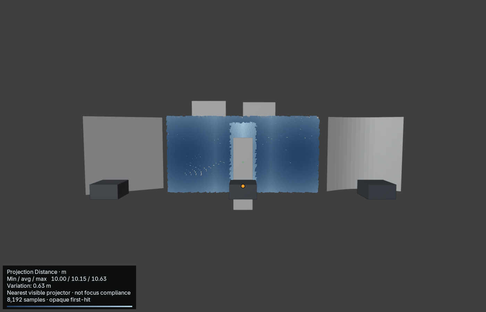
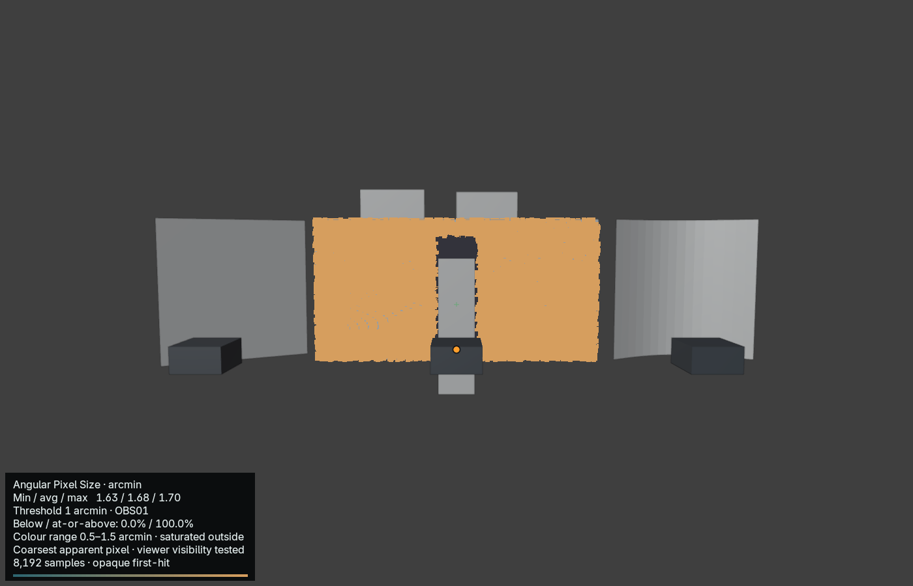

Development beta · 2026-10-25T02:11:07+00:00
Project Name: Beam Surface Intelligence · Author: Twisted Pixel





| ID | Raster | Ratio | Throw m | Image W × H m | px/m | mm/px | H / V shift % | Lumens | Lux | Notes |
|---|---|---|---|---|---|---|---|---|---|---|
| PJ01 | 2000 × 1000 | 0.70 | 10.00 | 14.29 × 7.14 | 140 | 7.14 | +0.0 / +0.0 | 20,000 | 196 | |
| PJ02 | 1920 × 1080 | 0.70 | 5.85 | 8.36 × 4.70 | 230 | 4.35 | +0.0 / +0.0 | 20,000 | 509 | |
| PJ03 | 1920 × 1080 | 0.70 | 10.00 | 14.29 × 8.04 | 134 | 7.44 | +0.0 / +0.0 | 20,000 | 174 |
Shift uses full-image dimensions. Measurements and illuminance are nominal centre values.
| Group | Layout | Pair | Axis | Requested overlap | Actual overlap | Gap m |
|---|
Adjacent-pair overlap is measured on the group reference plane.
| ID | Width m | Height m | Aspect | Notes |
|---|
| Receiver | Samples | Area m² | Visible coverage | Overlap / surface | Min / avg / max px/m | Max anisotropy | Occluded samples |
|---|---|---|---|---|---|---|---|
| Flat Receiver | 8192 | 32.00 | 100.0% | 100.0% | 134 / 139 / 140 | 1.00:1 | 0.0% |
Estimated Illuminance · lux · Min / avg / max 348.44 / 449.05 / 544.44 · Uniformity min / average: 0.776 · Scale 0.0–1000.0 lux · fixed · Target reference: 300 lux (display only) · Uniform raster flux · visible sources add · 8,192 samples · opaque first-hit
Projection Distance · m · Min / avg / max 10.00 / 10.15 / 10.63 · Variation: 0.63 m · Nearest visible projector · not focus compliance · 8,192 samples · opaque first-hit
Angular Pixel Size · arcmin · Min / avg / max 1.63 / 1.68 / 1.70 · Threshold 1 arcmin · OBS01 · Below / at-or-above: 0.0% / 100.0% · Colour range 0.5–1.5 arcmin · saturated outside · Coarsest apparent pixel · viewer visibility tested · 8,192 samples · opaque first-hit
Density is conservative worst-direction density. Overlap is a percentage of total surface area.
Nominal projector measurements do not guarantee visible coverage. Surface analysis is sampled, two-sided opaque evaluated geometry; thin occluders and between-sample regions remain untested. Estimated incident illuminance is not photometrically calibrated.
Structured source: beam-study.json. UUIDs identify records; labels are presentation only.